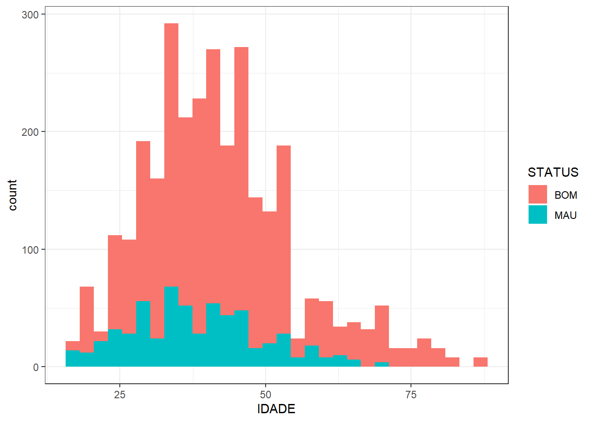

2 Data Sciente e Credit Scoring
Como grande entusiasta de modelos estatísticos e de crédito, busco sempre reter mais conhecimento sobre isso, nas últimas semanas venho lendo o livro Credit Scoring do Abharam Laredo. Nele o autor passa toda sua experiência sobre esse tema e no final fornece alguns bancos de dados e um “problema” que pode ser utilizado para colocar em prática o que é aprendido com a leitura. Aproveitei essa oportunidade e usei o problema passado para desenvolver um modelo e uma política de crédito que solucione o caso específico.
Atividade proposta:
“Livraria Dorela é uma cadeia de livrarias que tem quiosques nos principais supermercados das grandes capitais brasileiras. A Dorela passou a fazer o financiamento de livros, de acordo com um score definido de forma subjetiva, a taxa de rejeição era de 30% e a taxa aplicada era muito baixa, visto isso, os resultados não eram satisfatórios.
O novo diretor de crédito da Dorela, que havia atuado como gestor de credito de uma grande cadeira verejista de moda e tinha experiência no uso de modelos estatísticos decidiu desenvolver um modelo para esse caso.
Ele coletou uma amostra aleatória de 3.000 clientes cujo financiamento foi realizado no período de julho de 2007 a junho de 2008, ele considerou a performance do cliente nos 6 meses seguintes, e classificou como mau cliente aquele que teve qualquer atraso acima de 30 dias, caso contrário era classificado com bom cliente.”
Com esse banco de dados disponível vou iniciar o estudo e propor ao final um modelo e política que atenda a necessidade da livraria Dorela.
2.1 Banco de Dados
# Lendo dataset
data <- readxl::read_xls("351.xls")
# Selecionando as colunas de interesse
data <- data %>%
dplyr::select(IDADE,UNIFED,FONE,INSTRU,CARTAO,RESTR,RESID,FICCAO,NAOFICCAO,AUTOAJUDA,CATEG,STATUS)
# Tipo das colunas da base de dados
glimpse(data)## Rows: 3,000
## Columns: 12
## $ IDADE <dbl> 26, 43, 33, 39, 43, 40, 39, 50, 51, 45, 67, 34, 49, 59, 41, ~
## $ UNIFED <chr> "SP", "SP", "OUTROS", "RJ", "OUTROS", "RJ", "SP", "SP", "OUT~
## $ FONE <chr> "SIM", "SIM", "SIM", "SIM", "SIM", "SIM", "SIM", "SIM", "SIM~
## $ INSTRU <chr> "PRIM & SEC", "SUP", "SUP", "MV", "PRIM & SEC", "PRIM & SEC"~
## $ CARTAO <chr> "SIM", "NAO", "NAO", "SIM", "SIM", "SIM", "MV", "SIM", "SIM"~
## $ RESTR <chr> "SIM", "SIM", "SIM", "NAO", "NAO", "NAO", "NAO", "NAO", "SIM~
## $ RESID <chr> "PROP", "ALUG", "PROP", "PROP", "PROP", "PROP", "PROP", "PRO~
## $ FICCAO <chr> "SIM", "NAO", "SIM", "SIM", "SIM", "SIM", "SIM", "SIM", "SIM~
## $ NAOFICCAO <chr> "NAO", "NAO", "NAO", "NAO", "NAO", "NAO", "NAO", "NAO", "NAO~
## $ AUTOAJUDA <chr> "SIM", "SIM", "NAO", "NAO", "NAO", "SIM", "NAO", "NAO", "NAO~
## $ CATEG <dbl> 1, 1, 0, 1, 1, 1, 0, 0, 0, 0, 0, 0, 0, 0, 0, 1, 0, 0, 1, 0, ~
## $ STATUS <chr> "MAU", "MAU", "BOM", "BOM", "BOM", "BOM", "MAU", "BOM", "BOM~Primeiro passo foi abrir a base de dados, selecionar as colunas que são do meu interesse e aplicar o glimpse para entender as variáveis.
Entre as variáveis, temos:
- Idade: idade do cliente em anos;
- UNIFED: estado do cliente (SP, RJ e Outros);
- FONE: indica se há presença de telefone fixo ou não;
- INSTRU: nível de escolaridade;
- CARTAO: tem cartão de crédito;
- RESTR: apresenta algum restritivo no mercado;
- RESID: mora em residência própria ou alugada;
- FICCAO: comprou livro de ficção;
- NAOFICCAO: comprou livro de não ficção;
- AUTOAJUDA: comprou livro de autoajuda;
- CATEG: comprou dois livros ou mais;
- STATUS: variável resposta, bom ou mau cliente.
Com isso já é possível mapear a classe de cada variável, se é numérica, string ou fator, essa diferença entre as classes pode interferir na análise descritiva e na modelagem.
Antes de prosseguir para a análise descritiva seria necessário fazer uma análise de dados faltantes ou NA e qualquer dado fora do comum, como é dito na descrição da base de dados que não há dados faltantes não mapeados eu vou pular essa parte.
2.2 Análise Descritiva
Como estou trabalhando com uma base de dado de variável resposta binária é importante ver qual é a proporção dessa variável, nesse caso, de bons e maus clientes.
# Status
prop.table(table(data$STATUS))##
## BOM MAU
## 0.8 0.2Vemos então que de todos os 3000 clientes, 80% são bons e apenas 20% apresentaram atraso maior do que 30 dias.
Agora vou partir para a análise das variáveis preditoras, começando com a variável númerica idade
## # A tibble: 6 x 3
## metrica Bom Mau
## <chr> <table> <table>
## 1 min 18.00 18.00000
## 2 1 quartil 34.00 30.00000
## 3 mediana 41.00 37.00000
## 4 media 42.72 38.28333
## 5 3 quartil 49.25 45.00000
## 6 max 88.00 70.00000
É possível notar acima que parece haver pouca diferença de idade entre as classes de bons e maus pagadores, a média de idade dos bons pagadores é 4 anos maior que a dos maus pagadores.
Para analisar as variáveis categóricas eu criei uma pequena função que cria tabelas com a proporção de bons e maus pagadores em cada uma das classes das variáveis.
Vou começar analisando as variáveis de UNIFED, FONE, INSTRU e CARTAO.
|
|
|
|
A primeira tabela é da variável FONE, pelo o ano da base de dados era esperado que essa variável apresentasse uma diferença maior na distribuição de bons e maus clientes entre as classes, entretando, vimos que a proporção de clientes bons e maus é semelhante, ficando próximo dos 80% de bons.
Já na tabela da variável UNIFED é possível notar que os clientes do RJ apresentam uma taxa menor de maus clientes, podendo ser um fator importante para a variável.
Na tabela de CARTAO, aqueles que previamente já tinham um cartão apresentaram uma taxa menor de inadimplência e os clientes sem cartão e sem informação (MV) apresentaram uma distribuição semelhante de maus clientes, não farei nenhuma junção de classe considerando MV como um fator.
Na variável INSTRU, aqueles que têm nível PRIM E SEC mostraram uma distribuição de bons e maus clientes diferente das classes SUP e de MV, que tiveram uma distribuição semelhante, nesse caso também não vou fazer nenhuma junção de níveis, mantendo o MV.
|
|
|
|
A variável RESTR, como esperado, ela segmenta bem a base de clientes, dentre os que apresentam restritivos, 49% são maus clientes, e entre os que não tem restritivos 84% são bons clientes.
Na variável RESID a proporção de bons clientes é maior para os clientes que têm casa própria.
Na variável FICCAO, que fala se o cliente comprou livro de ficção, vemos que entre os que compram este tipo de livro proporção de bons clientes é maior do que entre os que não compraram.
Já na variável de NAOFICCAO não vemos uma diferença entre os níveis dela.
|
|
A variável CATEG mostra que entre aqueles que compram 2 livros ou mais a inadimplência é menor.
Já a variável que aponta aqueles clientes que compraram livro de auto ajuda o percentual de maus pagadores é, aproximadamente, 4x maior do que aqueles que não compraram livros de auto ajuda.
2.3 Modelagem
Para fazer a criação do modelo farei a divisão entre banco treino e teste, tendo o banco treino 70% da base de dados e o teste 30%. Essa divisão é feita mantendo a mesma proporção de maus clientes nos dois bancos.
Essa divisão é feita para avaliarmos a performance do modelos em uma base que não seja utilizada para o ajuste do modelo.
library(caret)
library(dplyr)
set.seed(12345)
indice = createDataPartition(y=data$STATUS, p=0.7, list=FALSE)
treino = data[indice, ]
teste = data[-indice, ]
treino <- treino %>%
mutate(STATUS = ifelse(STATUS == 'BOM',"0","1"),
STATUS = as.numeric(STATUS))
# Fazendo os modelos
fit1 <- glm(STATUS ~.,data = treino, family = "binomial")
resultado <- summary(fit1)
kbl(resultado$coefficients,align = "c", format = "html") %>%
kable_paper("hover", full_width = F)| Estimate | Std. Error | z value | Pr(>|z|) | |
|---|---|---|---|---|
| (Intercept) | -0.5500702 | 0.5833602 | -0.9429340 | 0.3457146 |
| IDADE | -0.0263951 | 0.0057399 | -4.5985591 | 0.0000043 |
| UNIFEDRJ | -0.8800942 | 0.1781381 | -4.9405172 | 0.0000008 |
| UNIFEDSP | -0.0005601 | 0.1577207 | -0.0035514 | 0.9971664 |
| FONESIM | 0.2029430 | 0.2381533 | 0.8521526 | 0.3941294 |
| INSTRUPRIM & SEC | 0.8644363 | 0.1871078 | 4.6199896 | 0.0000038 |
| INSTRUSUP | 0.0818779 | 0.1751249 | 0.4675398 | 0.6401137 |
| CARTAONAO | -0.6621534 | 0.4055050 | -1.6329108 | 0.1024878 |
| CARTAOSIM | -1.2483886 | 0.3943353 | -3.1658046 | 0.0015465 |
| RESTRSIM | 1.6857027 | 0.1649983 | 10.2164841 | 0.0000000 |
| RESIDPROP | -0.2427704 | 0.1899731 | -1.2779196 | 0.2012778 |
| FICCAOSIM | 0.8406594 | 0.1682863 | 4.9954122 | 0.0000006 |
| NAOFICCAOSIM | 0.2916317 | 0.3035979 | 0.9605852 | 0.3367608 |
| AUTOAJUDASIM | 2.9919784 | 0.1995661 | 14.9924165 | 0.0000000 |
| CATEG | -2.3008406 | 0.2046361 | -11.2435719 | 0.0000000 |
No resultado do modelo vemos que algumas variáveis não foram significativas, visto isso, vou fazer uma nova modelagem sem essas variáveis.
| Estimate | Std. Error | z value | Pr(>|z|) | |
|---|---|---|---|---|
| (Intercept) | -0.6160197 | 0.5139124 | -1.1986862 | 0.2306500 |
| IDADE | -0.0263839 | 0.0056977 | -4.6306058 | 0.0000036 |
| UNIFEDRJ | -0.8615245 | 0.1776068 | -4.8507402 | 0.0000012 |
| UNIFEDSP | 0.0155509 | 0.1571826 | 0.0989354 | 0.9211896 |
| INSTRUPRIM & SEC | 0.8770520 | 0.1863918 | 4.7054204 | 0.0000025 |
| INSTRUSUP | 0.0904156 | 0.1731469 | 0.5221902 | 0.6015379 |
| CARTAONAO | -0.6150139 | 0.4048910 | -1.5189616 | 0.1287722 |
| CARTAOSIM | -1.2139085 | 0.3937900 | -3.0826289 | 0.0020518 |
| RESTRSIM | 1.6854795 | 0.1636982 | 10.2962634 | 0.0000000 |
| FICCAOSIM | 0.8471162 | 0.1680679 | 5.0403196 | 0.0000005 |
| AUTOAJUDASIM | 2.9931425 | 0.1994726 | 15.0052828 | 0.0000000 |
| CATEG | -2.3113245 | 0.2046182 | -11.2957927 | 0.0000000 |
Agora vejo que todas as variáveis são influentes. Posso prosseguir a análise fazendo a escoragem e analisando a performance do modelo feito na base de teste. Para avaliar o modelo vou utilizar o KS (maior diferença entre a frquência acumulada de bons e maus pagadores) e o AUC (área abaixo da curva) com curva ROC.
Esse resultado de KS de 55%, apesar de ser muito bom, não é visto com frequência no mundo de modalgem de crédito, esse resultado alinhado com um AUC de 0,86 mostra que o modelo ficou muito bem ajustado.
2.4 Criação de política
Com o modelo ajustado e performance verificada é importante ver como esse modelo irá se comportar dentro de uma política de crédito.
Como o objetivo da livraria é dar crédito sendo justo e não focando exclusivamente no lucro, não vou colocar restrição na política de crédito para clientes com restritivo ou que compram livros de autoajuda, apesar da inadimplência maior nesses perfi. Para controlar possíveis perdas vou utilizar limite a ser financiado variavel de acordo com cada perfil e com uma taxa que acompanha o risco do cliente.
Analisando os resultados da escoragem optei por um ponto de corte de 602 e para complementar terei limites personalizados para cada perfil de risco seguindo algumas regras:
- Limite total para clientes com score acima de 807;
- Limite máximo de 700 reais para clientes com score de 675 a 807;
- Limite máximo de 600 reais para clientes com score de 602 a 674;
- Limite máximo de 500 reais para clientes que apesar do score, compraram livro de autoajuda;
- Limite máximo de 400 reais para clientes que apesar do score, apresentam restritivo;
- Limite máximo de 300 reais para clientes que apesar do score, comparam livros de autoajuda e apresentam restritivos;
Três tipos de taxa serão aplicadas em cima dessa política:
- Taxa 1: taxa fixa de de 10% em cima do valor da compra;
- Taxa 2: taxa variando entre 5%, 10% e 15% no valor da compra de acordo com o perfil do cliente;
- Taxa 3: taxa fixa de 4% ao mês;
- Taxa 4: taxa variando entre 2,5%, 5% e 7,5% ao mês de acordo com o perfil do cliente;
Para verificar qual é a melhor forma de taxar o cliente vou fazer uma simulação sorteando uma amostra aleatória da base de dados original, contendo bons e maus clientes, e atribuindo valores de compra que podem variar de 100 a 1000 reais e parcelas que vão de 2 a 6 vezes.
Após essa amostragem de clientes eu aplico a política e cada uma das taxas para calcular o resultado final. Esse processo eu repito 100 vezes e no final pego a média do lucro total e a média de juros pago por cliente.
| Taxa 1 | Taxa 2 | Taxa 3 | Taxa 4 | |
|---|---|---|---|---|
| lucro_medio | 2646 | 1919 | 8297 | 11578 |
| juro_medio | 51 | 48 | 80 | 96 |
A forma de aplicação de taxa que parece ser mais interessante para usar com a política feita é a taxa 4, que aplica taxas de 2,5% até 7,5% ao mês dependendo do perfil do cliente.
Esse tipo de taxa apresentou a melhor relação entre juros pagos e lucro total. Além disso, premia o melhor cliente com uma taxa menor, fazendo assim ele pagar menos para fazer a compra que deseja. Dessa forma a livraria consegue manter o objetivo de trabalhar com financiamentos justos e para o maior público possível, obtendo um lucro considerável por mês.
2.5 Conclusão
Ao final desse estudo temos um modelo que apresentou uma boa performance, ou seja, consegue dividir bem os clientes que são bons e maus pagadores. Junto desse modelo conseguimos chegar em uma política de crédito interessante, que varia a taxa e o limite aplicado para cada cliente de acordo com perfil de risco, mantém a taxa de reprovação de 30% e fornece um bom lucro para a livraria.
A política final ficou da seguinte forma:
- Limite total para clientes com score acima de 807;
- Limite máximo de 700 reais para clientes com score de 675 a 807;
- Limite máximo de 600 reais para clientes com score de 602 a 674;
- Limite máximo de 500 reais para clientes que apesar do score, compraram livro de autoajuda;
- Limite máximo de 400 reais para clientes que apesar do score, apresentam restritivo;
- Limite máximo de 300 reais para clientes que apesar do score, comparam livros de autoajuda e apresentam restritivos;
- Taxa variando entre 2,5%, 5% e 7,5% de acordo com o perfil do cliente.